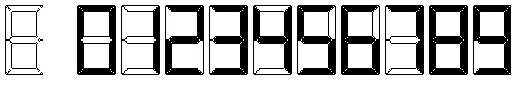

ACM-ICPC World Finals 2016 · Problem D
After numerous unfortunate freak fatalities and the lawsuits, settlements, protests, and boycotts that naturally followed, the beleaguered executives at ACME Clock Manufacturers have decided they need to finally fix their disastrous quality control issues. It has been known for years that the digital clocks they manufacture have an unacceptably high ratio of faulty liquid-crystal display (LCD) screens, and yet these heartless souls have repeatedly failed to address the issue, or even warn their hapless consumers! You have been called in as a quality consultant to finally put a stop to the madness. Your job is to write an automated program that can test a clock and find faults in its display.
These clocks use a standard 7-segment LCD display for all digits (shown on the left in Figure D.1), plus two small segments for the ’:’, and show all times in a 24-hour format. The minute before midnight is 23:59, and midnight is 0:00. The ’:’ segments of a working clock are on at all times. The representation of each digit using the seven segments is shown on the right in Figure D.1.

Your program will be given the display of a clock at several consecutive minutes, although you do not know exactly what time these displays start. Some of the LCD segments are burnt out (permanently off) and some are burnt in (permanently on). Your program must determine, where possible, which segments are definitely malfunctioning and which are definitely in working order.
The first input line contains a single integer n (1 ≤ n ≤ 100), which is the number of consecutive minutes of a clock’s display. The next 8n − 1 lines contain n ASCII images of these clock displays of size 7 × 21, with a single blank line separating the representations.
All digit segments are represented by two characters, and each colon segment is represented by one character. The character ’X’ indicates a segment that is on. The character ’.’ indicates anything else (segments that are off or non-segment portions of the display). See the sample input/output for details; the first output shows every possible LCD segment along with the smaller segments used to represent the ’:’. No clock representation has an ’X’ in a non-segment position or only half of a segment showing.
Display a 7 × 21 ASCII image with a ’0’ for every segment that is burnt out, a ’1’ for every segment that is burnt in, a ’W’ for every segment that is definitely working, and a ’?’ for every segment for which the status cannot be determined. Use ’.’ for non-segments. If the given displays cannot come from consecutive minutes, display impossible.
3 ......XX.....XX...XX. .....X..X...X..X....X .....X..X.X.X..X....X .............XX...XX. .....X..X......X.X..X .....X..X......X.X..X ......XX.....XX...XX. ......XX.....XX...XX. .....X..X...X..X....X .....X..X.X.X..X....X .............XX...XX. .....X..X......X.X..X .....X..X......X.X..X ......XX.....XX...XX. .............XX...XX. ........X...X..X....X ........X.X.X..X....X .............XX...... ........X...X..X.X..X ........X...X..X.X..X ......XX.....XX...XX.
.??...WW.....??...??. ?..?.W..?...?..1.0..? ?..?.W..?.?.?..1.0..? .??...??.....11...WW. ?..?.W..?.0.W..?.1..? ?..?.W..?...W..?.1..? .??...11.....??...??.
2 ......XX.....XX...XX. ...X....X...X..X.X..X ...X....X.X.X..X.X..X ......XX..........XX. ...X.X....X.X..X.X..X ...X.X......X..X.X..X ......XX.....XX...XX. ......XX.....XX...... ...X....X...X..X..... ...X....X.X.X..X..... ......XX............. ...X.X....X.X..X..... ...X.X......X..X..... ......XX.....XX......
impossible